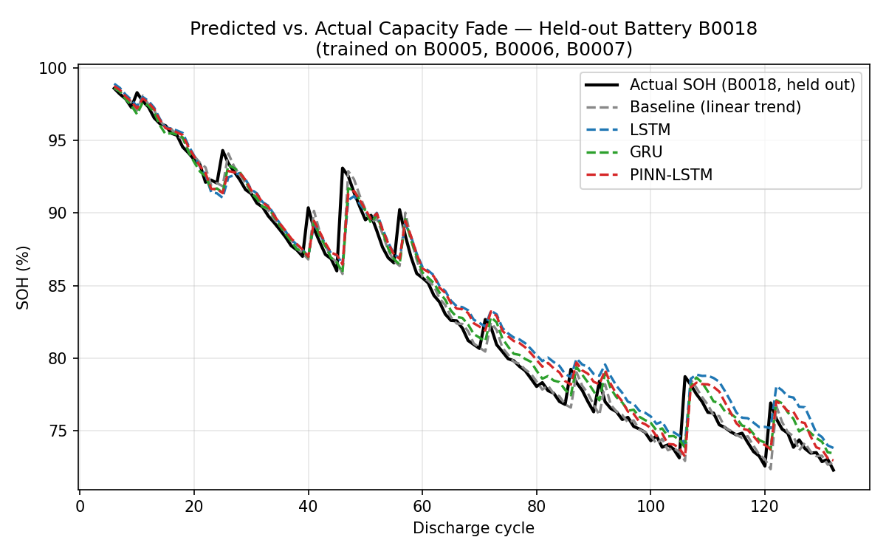
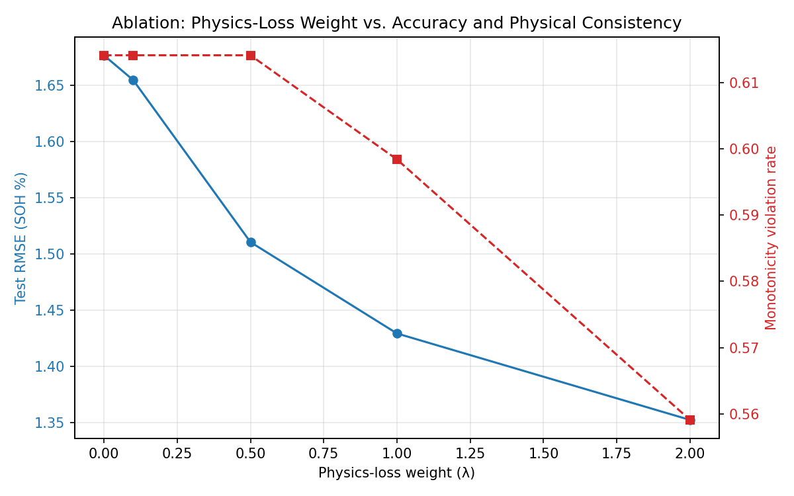

Physics-Informed LSTM for Li-ion Battery State-of-Health Estimation
Why I built this
Batteries wear out. A phone battery that used to last all day eventually only makes it a few hours. That decline has a name — state of health (SOH) — and being able to estimate it automatically, instead of just watching a battery slowly die, is a real engineering problem. It matters most for EVs and spacecraft, where you actually need to know how much life is left before a battery fails on you.
I built this after reading a paper out of UCF's Dey Power Electronics Lab (DPEL). It uses a physics-informed neural network (PINN) to estimate circuit parameters that drift with age inside a power converter, in real time, from indirect measurements instead of a direct reading. A battery's internal state is basically the same kind of problem — a component whose properties change with age, and you have to infer that instead of measuring it directly. Same underlying idea, different object. It seemed like a good excuse to actually implement the pattern myself instead of just reading about it.
So the plan was simple: build four different ways to predict SOH, compare them fairly, and be honest about what actually worked and what didn't. Same rigor I used comparing a CNN, ResNet-18, and a Vision Transformer in an earlier CIFAR-10 project.
The data
I used NASA Ames' well-known
Li-ion Battery Aging dataset —
four 18650 cells (B0005, B0006, B0007, B0018) that NASA ran through repeated
charge/discharge/impedance cycles at room temperature until each one lost roughly 25–30% of
its rated capacity. I pulled the raw .mat files from a
GitHub mirror
since NASA's own hosting kept going down while I was working on this.
Each .mat file is a deeply nested MATLAB struct — one entry per cycle, tagged
charge, discharge, or impedance. I pulled every
discharge cycle's reported capacity (the value NASA computes from the discharge current
integral), plus summary stats of voltage, current, and temperature during that discharge.
That gave me a clean table of 636 discharge cycles across the four cells.
The four approaches
All four use a sliding window of 5 past cycles to predict the next cycle's SOH:
- Baseline — a plain linear trend fit to SOH vs. cycle number, extrapolated one step forward. No learning at all. Just "assume it keeps declining at roughly the same rate it has been."
- Vanilla LSTM — a single recurrent layer (32 hidden units) followed by a linear head.
- GRU — identical setup to the LSTM, just a different recurrent cell type, so I could isolate whether the cell type itself matters.
- PINN-LSTM — architecturally identical to the vanilla LSTM. The only difference is the loss function.
The physics-informed part
On top of ordinary mean-squared-error loss, the PINN-LSTM adds a penalty:
physics_loss = mean( relu(predicted_SOH - most_recent_observed_SOH)^2 )
loss = data_loss + lambda * physics_lossIn plain terms: a battery shouldn't spontaneously heal itself and gain capacity back. If the model predicts a SOH higher than what it just saw, that gets penalized. It only fires on increases — predicting further decline is never punished, since that's the expected case. It's the same data-loss-plus-physics-loss structure Dr. Dey's paper uses, just with a much simpler physics rule. Mine's a monotonicity constraint; his is an actual circuit equation.
Results
All numbers below are on B0018 — the battery none of the neural models ever saw.
| Model | RMSE (%) | MAE (%) | R² |
|---|---|---|---|
| Baseline (linear trend) | 1.218 | 0.642 | 0.976 |
| Vanilla LSTM | 1.707 | 1.390 | 0.953 |
| GRU | 1.325 | 0.946 | 0.972 |
| PINN-LSTM (λ=1.0) | 1.442 | 1.089 | 0.967 |

So did the physics-informed part actually do anything?
This is the part I actually find interesting. I swept the physics-loss weight (λ) from 0 up to 2.0 and tracked two things: raw accuracy (RMSE), and what fraction of predictions physically increase SOH relative to the most recent observed cycle — a violation, since real cells don't gain capacity under normal cycling.
| λ (physics weight) | RMSE (%) | Monotonicity violation rate |
|---|---|---|
| 0.0 (plain LSTM) | 1.677 | 61.4% |
| 0.5 | 1.510 | 61.4% |
| 1.0 | 1.429 | 59.8% |
| 2.0 | 1.352 | 55.9% |

What the models all missed
Look back at the fade-curve figure above. Those sharp upward spikes in the real data are a known electrochemical relaxation effect — batteries actually recover a bit of capacity after sitting through a rest period between cycling sessions. None of my four approaches catch these, because my 5-cycle input window has no way of knowing a rest period is coming. It's a real limitation, not a bug. The fix would be adding elapsed real time between cycles as a feature, which NASA's raw timestamps would support directly. Haven't done that yet.
What I'd do next
- Add inter-cycle elapsed time as a feature, and see if it helps anticipate those rest-period recovery spikes.
- Swap my simplified monotonicity penalty for a real equivalent-circuit-model (ECM) residual — closer to what Dr. Dey's paper actually does for the converter.
- Run all four possible leave-one-battery-out combinations, not just B0018. A single held-out cell is a small, possibly non-representative test.
- Build the hardware side. I've got an Arduino Uno + MSP430 cycling rig planned to collect my own cell data and test whether a model trained on NASA's cells transfers to cells I've cycled myself.
Code
Everything's on GitHub: the data extraction script, the model definitions, the training loop with the physics loss, the plotting code, and the extracted feature CSV. Fixed random seed throughout, so the numbers above should reproduce exactly.
github.com/jddurnn777/battery-soh-lstm →